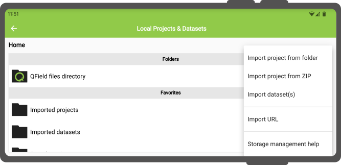
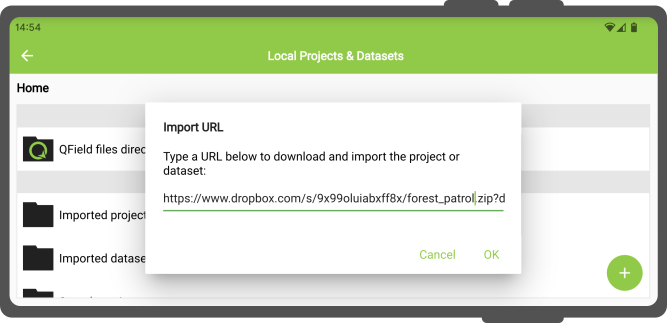
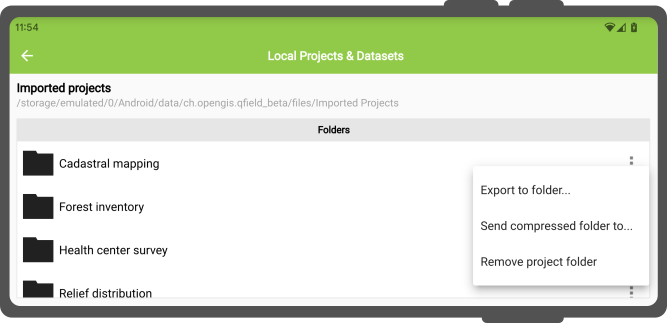

QField Storage Management¶
On the QField homescreen, users are presented with two options to open a project.
- QFieldCloud projects: The first option is to access a project stored on QFieldCloud How to set up and work with QFieldCloud is explained in the next chapter.
- Open local file: The second option involves copying a working copy of the QGIS project file from a laptop or PC (the source device) to the phone or tablet (the target device). On the target device, users can access and edit this local copy using QField and eventually copy the edited version back to the desktop or to an alternative cloud storage service.
There are various possibilities to export copies of project files and datasets from the source device running QGIS and importing them on to a target device for field-data collection. Below are OS-specific instructions on how to access projects and individual datasets through QField.
Exporting QGIS project files for use in QField¶
QField supports a wide range of data formats. There are two ways of preparing and copying a project in QGIS for use in QField.
Storing files in a designated folder¶
One way of compiling all necessary parts of a QGIS project is to store them in a folder. This folder can contain individual files such as a
- QGIS project file (.qgs or .qgz)
- Vector data (shapefiles, GeoJSON or Geopackage)
- Raster data (GeoTIFFs, JPEGS and others)
- Auxiliary files, which includes additional files used for styling (.qml or .sld) and any other files referenced by the project
Packaging the project as a GeoPackage¶
The simplest and most efficient way to package a QGIS project and its corresponding geospatial data into one file is to use GeoPackages. We recommend using the GeoPackage file format for projects in QField, since packaging in QGIS is easy and straightforward. To package a project as a GeoPackage, three steps are necessary.
-
Package vector layers as GeoPackage: First, click on the toolbox and search for the tool “package layers”. This tool lets you package selected vector layers in the project file (and elsewhere) into a single GeoPackage containing the geospatial data.
-
Add raster layers to GeoPackage If your project contains raster layers these can also be stored in the GeoPackage. Click on the raster layer you want to export, then export > save as, and select GeoPackage as the format. Add a filename and select the three dots to browse for the GeoPackage. Select the GeoPackage and change the file format at the bottom of the dialogue window from “GeoTIFF” to “All files (.)”. Now both vector and raster layers are saved in the same GeoPackage. To make sure, browse for the GeoPackage in the browser panel and expand it.
-
Add project file (.qgs) to GeoPackage: Next go to Project > Save to > GeoPackage, and select the GeoPackage file containing all the layers. This saves the project file, with the .qgs extension into the GeoPackage as well.
For more information, consult the QGIS documentation packaging layers.
Copying project over to the QField target device¶
On both Android and iOS, installing QField creates a folder called QField, containing three folders; Imported Datasets, Imported Projects and QField.
After packaging the project accordingly, the folder or file containing the project has to be copied over to the target device running QField, specifically to the folder called Imported Projects.
This folder can be found on the following paths:
- Android path:
Android/data/ch.opengis.qfield/files/Imported Projects - iOS path:
On My iPhone/QField/Imported Projects
Copying the packaged project over to the corresponding folder of each device can be done in several ways.
Android¶
Transfer via USB-cable¶
If you want to use a cable to import the project on to your device, simply connect both devices using a USB cable and follow the instructions on how to transfer files between your computer and the android device.
On most devices plugged into a computer via USB cable connection, the path will be <drive>:/Android/data/ch.opengis.qfield/files/.
There, users will find both the Imported Datasets and Imported Projects folders within which the QGIS projects and datasets should be placed.
Changes done to the project content and datasets are saved in the files found in these locations.
Sending via Bluetooth¶
Wireless transfer of files is also possible by sharing files via a Bluetooth connection.
Google Drive (and other cloud storage services)¶
The advantage of using Google Drive is that both the source device and target device have shared access to a central working directory containing the current project files. A possible workflow may look like this:
- Prepare and package a QGIS project on the source device
- Upload the project to the cloud (for instance Google Drive)
- Download the project to the target devices and collect data
- Upload the changed project (or parts of the project) from the target devices back to the cloud and replace the old files with the new ones
- Download the project back on to the source device
Note
When working with Google Drive, it may be helpful to create a dedicated folder in the cloud containing all the projects. A parallel of this folder can then also be created on the target device, to which the QGIS projects can be downloaded and saved in.
iOS¶
Transfer via USB-cable¶
Transfering files from MacBooks or Macs to iPhone using a cable is not straightforward, since it is not possible to access individual files in the QField directory. One workaround could be the following
- copy the entire folder
Imported Projectsfrom your iOS target device over to your source device - copy the packaged QGIS project file into the copied
Imported Projectsfolder - copy back and replace the old
Imported Folderwith the new one
iCloud (and other cloud storage services)¶
An efficient way to synchronize projects is to use iCloud as a shared workspace to download and upload project files.
It is not possible to import projects from folders inside the iOS QField application.
Instead, the new project files have to be saved in the Imported Projects folder so that QField can access them.
One possible workflow could be the following:
- On the source device, upload the packaged project to a folder on iCloud (titled e.g. "QField projects")
- On the target device, download the packaged project and move the file to the QField folder
Imported Projects - Open the project file from inside the QField app and collect data
- Upload the project file back to the shared iCloud folder and replace the old project file
- On the source device, download the new project file containing the added data and the changes made
Share via AirDrop¶
A quick and easy way to exchange files back and forth is using AirDrop.
The only requirement is that both source and target device have to be OS and iOS respectively.
On the source device, right-click the file and select Share..., choose AirDrop, and then select the target device.
On the target device, save the project directly to the QField directory Imported Projects.
After accessing and manipulating the project files in QField, use AirDrop on the target device to transfer the project files back to the source device.
Importing projects and datasets¶
Apart from using QFieldCloud, QField can open projects and datasets in four ways:

{kind=link}
On Android all of these actions are available by clicking on the ‘import (+) button‘ located on the bottom-right corner of the project/dataset picker screen, which can be accessed by clicking on the ‘Open local files’ button located in QField‘s welcome screen.


On iOS, the only action available through the 'import (+) button' is to import from a URL.
Importing a project folder (Android and iOS)¶
Android¶
When importing a project through the "Import project from folder" action, users will be asked to grant permission for QField to read the content of a given folder on the device’s storage. When the folder is selected, QField copies the folder content(including its sub-folders) into its ‘Imported projects’ folder. Users can then open and interact with the project from there.
Re-importing a given folder through the drop-down menu action will overwrite preexisting projects given an identical folder name. That allows users to be able to update their projects.
Note
Feature editing, addition, and deletion will be saved into the imported project’s datasets, not in the original folder selected during the import process. See sections below on how to send/export edited projects and datasets.
iOS¶
On iOS, installing QField creates a folder titled QField in the Files app.
Packaged projects prepared on the source device and exported on to the target device must be stored in QField > Imported Projects folder.
To open a local file, press on 'Open local file' on the QField home screen and navigate to QField files directory > Imported Projects and choose the project you want to open.
Importing a compressed project (Android only)¶
On Android, it is possible to import compressed (zipped) projects into QField. When choosing the ‘Import project from ZIP’ action, users will be asked to select a ZIP file on their device‘s storage. QField will then decompress the file into its ‘Imported projects’ location, from which users can open and interact with the project.
Esto puede facilitar enormemente la distribución de proyectos, al poder enviar un solo archivo a los usuarios.
Importing from a URL (Android and iOS)¶
When importing a project or individual dataset through the "Import URL" action, users will be asked to provide a URL string to a file. QField will subsequently fetch the content and save it into the ‘Imported projects’ - provided the URL points to a project compressed into a ZIP archive - or ‘Imported datasets’.

{kind=link}
QField considerará un archivo ZIP como un proyecto comprimido cuando se detecten uno o más archivos de proyecto .qgs/.qgz.
Importing individual datasets (Android only)¶
The ‘Import dataset(s)‘ action allows users to select one or more datasets via an Android system file picker. Upon selecting the datasets, QField will copy those into the ‘Imported datasets’ folder, where users can then open and modify their content.
Note
Users will have to ensure that all sidecar files are selected when importing datasets (e.g. a shapefile would require users to select the .shp, .shx, .dbf, .prj, and .cpg files).
Exporting modified projects and datasets (Android only)¶
Once users modify imported projects and datasets, QField offer various means through which the content can be sent from and exported out of its system-protected files storage:
- by exporting a project folder or an individual dataset;
- by sending a compressed project folder to a {cloud, email, messenger, etc.} app;
- by sending an individual dataset to a {cloud, email, messenger, etc.} app; and
- by accessing imported content directly through USB cable.

{kind=link}
These actions are available via the dropdown action menu attached to project folders and individual datasets list in the project/dataset picker, which can be accessed by clicking on the ‘Open local files‘ button located in QField’s welcome screen.
Exportar una carpeta de proyecto o un conjunto de datos individual¶
When choosing the ‘Export to folder‘ action, users will be asked to pick a location - using the Android system‘s folder picker activity - within which the content of a select project folder or individual dataset will be copied to.
This action can be used to copy the content of modified projects or datasets into a folder on the device that can be accessed by third-party synchronization apps such as Syncthing. Users can also directly copy content into cloud accounts of providers that support Android‘s Scoped Storage directory provider (eg. NextCloud).
Nota
La exportación a una carpeta sobrescribirá el contenido preexistente.
Enviar una carpeta de proyecto comprimida¶
The ‘Send compressed folder to‘ action compresses the content of a selected folder into a ZIP archive. Users are then asked through which app on their device the resulting ZIP archive should be send through.
Users can compress and send whole projects by selecting root folders in QField‘s ‘Imported projects‘ directory, as well as send selective folders within project folders. This allows for users to narrow down the compressed files to e.g. a /DCIM subfolder.
Enviar un conjunto de datos individual¶
Users can select the ‘Send to‘ action for individual datasets, allowing for the sending of edited datasets directly to third party apps such as Gmail, Drive, Dropbox, Nextcloud,
To export the layers from a synchronized QFieldCloud project, either on your device or a preferred cloud provider. To do this, within your project:
- Direct to the folder icon with the wheel via the side-dashboard to opem the project folder.
{kind=link}
-
Inside this project folder, you will find your project files. Offline layers will be stored in a file named 'data.gpkg'. You can also export your attached files (Photos, Audio, Video, etc).
-
Ahora, haz clic en los tres puntos (⋮) situados a la derecha del archivo o carpeta.
{kind=link}
- Elija entre las acciones "Enviar a..." o "Exportar a carpeta..." en función de sus preferencias y siga las instrucciones en consecuencia.
{kind=link}
Nota
Esta funcionalidad sólo está disponible en Android.